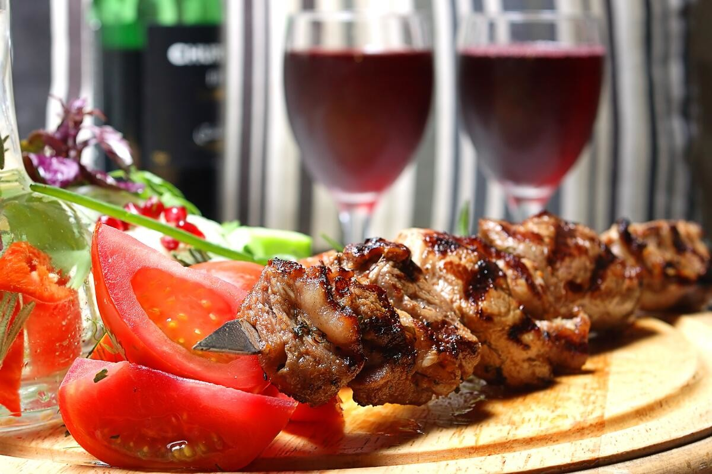

Шашлык в шампанском

Ингредиенты
- Свиной ошеек - 2,5 кг
- Сухое шампанское - 1 бутылка
- Лук репчатый - 5 шт.
- Приправа для шашлыка
- Соль
Способ приготовления
Сегодня мы с Вами приготовим шашлык.
- Мясо промываем, режем на куски, размером с детский кулачок.
- Лук режем кольцами.
- В эмалированной посуде руками смешиваем мясо со специями и солью, заливаем шампанским (так, чтобы оно покрыло мясо полностью), сверху выкладываем лук.
Оставляем шашлык в шампанском промариноваться.
- Готовим шашлык около 15-20 минут, на углях.
- Очень вкусно пропитывается маринадом и запахом мяса хлеб, который кладут на шашлык, когда он немного поджарится.
- И, конечно, в жар мы отправили картошку в фольге.
Другие рецепты шашлыка

К шашлыку обязательно подаем овощи.
Приятного аппетита!